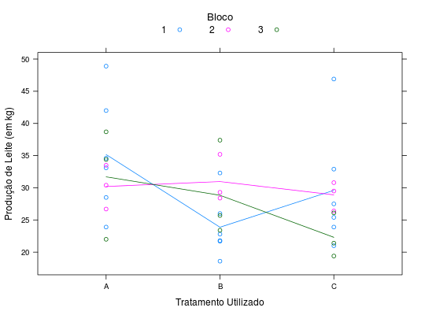

Experimento de reversão (switch-back) avaliando a produção de leite em função do nível de nutrição. Os fatores período, bloco e vaca são de blocagem. O tratamento estudado tinha 3 níveis. Sendo assim, 6 possibilidades existem: A-B-A, B-A-B, A-C-A, C-A-C, B-C-B, C-B-C. Cada uma delas foi atribuída a duas vacas.
Um data.frame com 36 observações e 5 variáveis, em que
periodoblocvacatratprodPIMENTEL-GOMES (2009), Tabela 14.5.1, pág. 278.
library(lattice) data(PimentelTb14.5.1)#> Warning: data set ‘PimentelTb14.5.1’ not foundstr(PimentelTb14.5.1)#> 'data.frame': 36 obs. of 5 variables: #> $ periodo: Factor w/ 3 levels "1","2","3": 1 1 1 1 1 1 1 1 1 1 ... #> $ bloc : Factor w/ 3 levels "1","2","3": 1 1 1 1 1 1 2 2 2 3 ... #> $ vaca : Factor w/ 12 levels "1","2","3","4",..: 1 2 3 4 5 6 7 8 9 10 ... #> $ trat : Factor w/ 3 levels "A","B","C": 1 2 3 1 2 3 1 2 3 1 ... #> $ prod : num 34.6 22.8 32.9 48.9 21.8 25.4 30.4 35.2 30.8 38.7 ...ftable(xtabs(~vaca + trat, data = PimentelTb14.5.1))#> trat A B C #> vaca #> 1 2 1 0 #> 2 0 2 1 #> 3 1 0 2 #> 4 2 0 1 #> 5 1 2 0 #> 6 0 1 2 #> 7 2 0 1 #> 8 1 2 0 #> 9 0 1 2 #> 10 2 1 0 #> 11 0 2 1 #> 12 1 0 2xyplot(prod ~ trat, groups = bloc, type = c("a", "p"), auto.key = list(title = "Bloco", cex.title = 1.1, columns = 3), data = PimentelTb14.5.1, ylab = "Produção de Leite (em kg)", xlab = "Tratamento Utilizado")